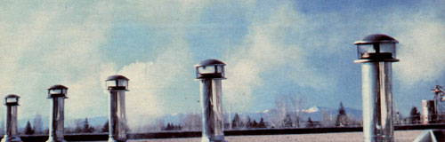
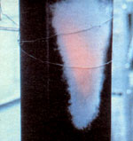
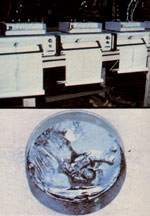
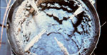
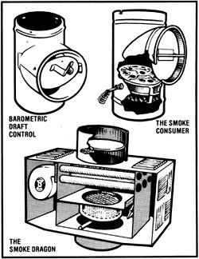
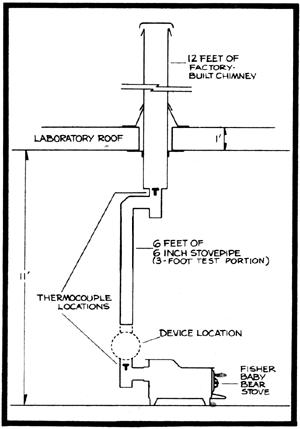

We'll soon know the truth about three of the products which are said to control creosote.
Creosote, the unburned material that settles out of wood smoke and accumulates in stoves and chimneys, plagues everyone who heats with wood. And whether you're worried about the possible danger of a chimney (and, perhaps, house) fire . . . the detrimental effects that a clogged stovepipe might have on your heater's performance . . . corrosion of the metal in the flue . . . the inconvenience and/or expense of chimney cleaning . . . or simply the bad odor and-when there are leaks in the pipe-the mess caused by such accumulations, you'd no doubt like to know as much as you can about how to minimize creosote buildup.
Consequently, THE Mother Earth News(restricted) and Shelton Energy Research have entered into a cooperative research project to test three devices which, it's claimed, reduce the rate of accumula tion of creosote. In this issue we'll discuss some of the options open to concerned woodstove owners, and describe the research project that's now underway. Then, in MOTHER NO. 74, we'll report the findings of our tests.
The potential for creosote accumulation arises when unburned materials in the flue gases-including vapors, tar mist, and soot particles resulting from incomplete combustion-pass through the chimney. As the gases cool, the unburned materials can adhere to the chimney walls. The process is complicated, however, by the fact that creosote has no single chemical composition, appearance, density, or ignition temperature. Some of its common forms are tar, flakes, slag, soot, and liquid.
The safest and most reliable way to insure that creosote accumulations don't become thick enough to cause trouble is to inspect the chimney regularly, and then clean it when necessary. After a stove is first installed, the flue should be checked every week. Then, if the accumulation rate proves to be slow, the frequency of inspection can be reduced. The chimney should be swept whenever the deposits exceed 1/4" in thickness.
Chemical chimney cleaners have long been touted as quick, easy, inexpensive, and reliable reducers or eliminators of creosote. During recent testing, however, it was shown that if chemical chimney cleaners work at all, they work only occasionally. Hence, they can't be relied on to always keep creosote levels safe. (See our article "Testing Chemical Chimney Cleaners", in MOTHER NO. 71, page 118. )
Another technique that's commonly suggested for controlling creosote is to burn an intentional short, hot fire every day or two. The result of such a practice is either a small (and therefore supposedly relatively safe) chimney fire, or-more often-a drying and flaking of the thin tarlike layer . . . with the particles either falling or being blown out the flue. However, it's vital that there be only very thin creosote deposits present when this procedure is used, and only frequent inspections can establish that fact.
If the chimney hasn't been checked or cleaned for along time-or if the stove has been run at low power for a few days and a thick, tarry, highly flammable deposit has built up-an intentional hot burn could trigger a serious chimney fire. (You should, of course, avoid the technique if you have any doubts about the safety of the chimney itself.) In summation, then, though the hot fire method can work, the numerous "ifs" involved prohibit us from recommending it.
But what can be done to prevent, or at least minimize, creosote buildup in the first place? Two major factors affect the rate at which the substance collects, and solutions to the problem are most likely to be found by dealing with one or both of them: [1] the density of the smoke going up the chimney (that is, the amount of unburned material that remains in the gases) . . . [2] the temperature of the flue wall (cool walls increase the condensation and accumulation of creosote).
Flue wall temperatures are affected by the type of chimney used and by its location. Both double-wall/packed-insulation and triple-wall/air-insulation prefabricated chimneys do a better job of holding flue gas heat than do either masonry or triple-wall/thermosiphon (aircooled) types. And any of them will prove more satisfactory if located inside the house, where the exterior is in contact with warmer air than would be the case if the chimney ran up the outside of the dwelling. Long runs of stovepipe between the appliance and the chimney al so decrease flue gas temperature, and-therefore-increase creosote accumulation. In fact, the more heat is pulled out of the fire and flue gases-whether in the stove, in a heat exchanger accessory, in the stovepipe connector, or in the chimney-the cooler the smoke will be and the more the creosote will build up. Thus there's often a conflict between improving energy efficiency and minimizing creosote.
Stove operation, rather than design, is the single most important factor affecting smoke density in traditional woodstoves. As discussed in the last issue of this magazine (see "Woodstove Smoke" on page 72 of MOTHER NO. 72), you can limit creosote buildup by simply burning only small, hot fires in your stove.
Contrary to popular belief, very dry wood (that with less than 15% moisture content) usually increases creosote accumulation in stoves. In open appliances such as fireplaces, however, the use of green wood usually increases creosote accumulation. Pitchy pines have long been considered to be heavy creosote producers, but the effect isn't always very marked.
Appliance design can also influence the accumulation of creosote. In issue 72, MOTHER discussed a number of possi bly relevant design features . . . including secondary combustion, catalytic combustion, and the high turbulence furnace. These approaches are not always effective (good ideas require good engineering), but each of them does have promise.
Perhaps the most appealing option for reducing creosote-given the large number of woodstoves already installed in homes-would be some sort of retrofit or add-on device. There are many such aftermarket products available today (some of them were described in issue 72), but-despite their popular appeal-little if any scientific evidence exists to show whether any of the devices actually work.
In the Shelton Energy Research/THE Mother Earth News(restricted) cooperative research project, three retrofit products are being tested: a typical barometric draft control (we're using one made by Steinen of Carolina), the Smoke Dragon catalytic afterburner, and the Smoke Consumer. (All three are represented in the accompanying illustrations.)
Barometric draft regulators are designed to prevent excess draft, and are usually installed in the stovepipe between the appliance and the chimney. (Such devices can't, of course, help a chimney with inadequate draft.) Barometric draft controls are equipped with a hinged and weighted flap that's closed when there's no fire in the stove. During use, however, when the draft in the chimney exceeds a preselected value, suction pulls the flap open. This lets room air into the chimney, thereby preventing the draft from becoming greater than the chosen setting (adjustments are made by moving the weight attached to the flap).
Barometric controls, by limiting draft, also limit the intensity of the fire. This results in a steadier heat output and protects the stove and chimney from overheating. (Such functions are usually more important for coal-fired than for wood-fired appliances, but they come into play with large central woodburning furnaces too.)
The important issue in this study, however, is the creosote-controlling potential of barometric draft regulators. Added air both cools and dilutes the smoke in the chimney. The dilution air also increases the total flow up the chimney (despite the fact that it lowers the temperature of the gas), and therefore yields higher flue gas velocity. Though the net effect of all these influences is hard to predict theoretically, studies done at Shelton Energy Research-using devices other than barometric draft controls-have shown that the introduction of dilution air can dramatically reduce creosote accumulation. [EDITOR'S NOTE: Information on obtaining SER's research report on dilution airand on other projects-is listed at the end of this article.]
Our current tests will, we hope, enable us to measure just how much less creosote can be expected in a chimney when a barometric draft regulator is used. In order to maximize the device's possible effect, we're adjusting it for the minimum draft setting that's consistent with the firing rate and heat output typically used in a home installation.
The Smoke Consumer consists of a knitted wire mesh filter mounted under a cast-iron plate. The assembly can be positioned either at a right angle or parallel to the smoke flow . . . just as can a simple stovepipe damper. When the filter is in the closed (across the flow) position, much of the flue gas moves through its passageways (of course a little smoke does flow around the device, in the space between the plate and the stovepipe wall). The manufacturer claims that the Smoke Consumer reduces creosote by filtering out particles. Consequently, the filter requires periodic cleaning: Maintenance includes a recommended "continuous burn reactor cycle" once a day-which involves running the stove hot enough to burn material off the filter-and manual cleaning of the mesh (by removing it from the unit) weekly.
The Smoke Dragon is a catalytic afterburner and heat exchanger that's de signed to ignite any smoke that hasn't been burned in the stove itself. The Smoke Dragon's catalytic combuster-which is made by Corning Glass Works-is a ceramic honeycomb structure, about six inches in diameter and three inches long, coated with a very thin layer of a noble-metal catalyst (such as platinum and/or palladium).
Essentially, the catalyst lowers the ignition temperature of the smoke from around 1100 or 1200°F to about 400 to 600°F. Thus, if the gas is hot enough, and if it contains adequate oxygen, much of the material will be burned in and just above the catalyst. Furthermore, once the catalyst begins working, the smoke temperature can fall without ill effects . . . since the heat being generated by the burning gas in the catalyst will warm the incoming fumes enough so that they too will ignite. The Smoke Dragon has the potential for reducing creosote, cutting air-polluting emissions, and increasing the energy efficiency of the system with which it's used (much of the heat released in the combuster is recovered by the heat exchanger).
However, in practice it's difficult to predict the performance of catalytic devices. Factors that could influence the overall effectiveness of such a unit include smoke density, oxygen concentration, the degree of mixing of oxygen and smoke, flue gas temperature, and the amount of both intentional and unintentional smoke bypass. Thus, only through testing can the actual effectiveness of devices such as the Smoke Dragon be determined.
An array of identical stoves-some equipped with devices and others without-are being operated simultaneously for ten days . . . under a variety of firing conditions. Each product being tested has been installed on a pair of stoves (see the diagram of the experimental setup), and two heaters are being run without devices . . . to serve as controls. By arranging the experiment in this fashion, we can check on the consistency and re producibility of both the devices' effects and the test methods.
Creosote accumulation is determined by weighing the "test portions" of the chimneys before and after the test. These sections consist of single-wall stovepipe located inside the laboratory . . . where the controlled climate can give better experimental control and reproducibility of results. Using stovepipe instead of factory-built chimney increases the amount of creosote that accumulates, since the flue gases cool off more rapidly when passing through standard stovepipe.
A variety of different wood species and moisture contents are being used to fuel the stoves over the course of the experiment, but the same species and moisture content are used in all six heaters at any given fuel loading. Furthermore, for each refueling, all six loads have the same weight within 10%, and the total fuel weights for each stove over a day are the same to within 1%.
The combustion air controls on all the appliances are set to maintain the same burning conditions . . . using the temperatures of the flue gases just below the devices and the appearance of the fires as indicators of uniformity. As shown in the diagram, flue gas temperatures are being measured both below the devices and above them in the test sections of the stovepipes. The temperatures are being monitored constantly, using recorders.
The stoves will be fired for about ten days at a mixture of high and low burn rates . . . in order to simulate home stove use realistically and to assure that any creosote reducer that performs better under particular firing conditions gets a chance to show its capabilities. Each stovepipe test section will then be reweighed. Both "wet" and "dry" weights will be measured (the sections will be placed in a 200°F oven for roughly three days before the second weighing). From previous experience we know that significant amounts of water can be trapped in the creosote deposits on the flue walls, which could distort the results if no dry weight were taken.
In our long history of testing stoves and accessory products, we have encountered many surprises, and we've learned to be careful about prejudging results. The manufacturers of all three products claim significant creosote-reducing effects . . . in our article in the next issue of MOTHER, we'll report our conclusions, after having actually put the products to the test.
Jay Shelton is the director of Shelton Energy Research, an independent laboratory specializing in research, testing, and product development in the area of wood and coal heating. Cathleen Barczys is a Research Associate.
For a free list of the laboratory's publications and more information on the completed research projects mentioned in this article (dealing with dilution air, chemical chimney cleaners, barometric draft controls, catalytic combustion, and creosote, wood species and moisture content), please send a stamped, self-addressed envelope to Shelton Energy Research, Dept. TMEN, P.O. Box 5235, Santa Fe, New Mexico 87502.
|
 A stovepipe can glow bright red during a chimney fire. |
 Scanners and recorders monitor flue gas temperatures in the stovepipe. A thermocouple array similar to this one is used at SER to measure the average flue gas temperature. This example is arranged asymmetrically because the flow was assymmetric. |
 Liquid creosote collects in a clean-out cap. |
|
 |
 |
 |